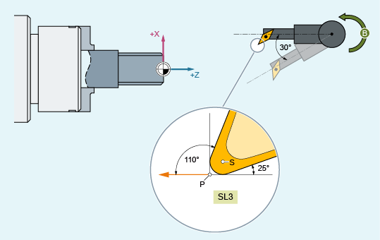

Bei einem Werkzeug mit der Schneidenlage 3 und einem orientierbaren Werkzeugträger, der das Werkzeug um die B-Achse drehen kann, soll mit Hilfe des CUTMOD-Befehls die Schneidenlage nach einer Werkzeugdrehung modifiziert werden.
S: | Schneidenmittelpunkt |
P: | Schneidenbezugspunkt |
SL: | Schneidenlage |
| Programmcode | Kommentar |
|---|---|
| N10 $TC_DP1[1,1]=500 | |
| N20 $TC_DP2[1,1]=3 | ; Schneidenlage |
| N30 $TC_DP3[1,1]=12 | |
| N40 $TC_DP4[1,1]=1 | |
| N50 $TC_DP6[1,1]=6 | |
| N60 $TC_DP10[1,1]=110 | ; Halterwinkel |
| N70 $TC_DP11[1,1]=3 | ; Schnittrichtung |
| N80 $TC_DP24[1,1]=25 | ; Freiwinkel |
| N90 $TC_CARR7[2]=0 $TC_CARR8[2]=1 $TC_CARR9[2]=0 | ; B–Achse |
| N100 $TC_CARR10[2]=0 $TC_CARR11[2]=0 $TC_CARR12[2]=1 | ; C–Achse |
| N110 $TC_CARR13[2]=0 | |
| N120 $TC_CARR14[2]=0 | |
| N130 $TC_CARR21[2]=X | |
| N140 $TC_CARR22[2]=X | |
| N150 $TC_CARR23[2]="M" | |
| N160 TCOABS CUTMOD=0 | |
| N170 G18 T1 D1 TCARR=2 | ; X Y Z |
| N180 X0 Y0 Z0 F10000 | ; 12.000 0.000 1.000 |
| N190 $TC_CARR13[2]=30 | |
| N200 TCARR=2 | |
| N210 X0 Y0 Z0 | ; 10.892 0.000 -5.134 |
| N220 G42 Z–10 | ; 8.696 0.000 –17.330 |
| N230 Z–20 | ; 8.696 0.000 –21.330 |
| N240 X10 | ; 12.696 0.000 –21.330 |
| N250 G40 X20 Z0 | ; 30.892 0.000 –5.134 |
| N260 CUTMOD=2 X0 Y0 Z0 | ; 8.696 0.000 –7.330 |
| N270 G42 Z–10 | ; 8.696 0.000 –17.330 |
| N280 Z–20 | ; 8.696 0.000 –21.330 |
| N290 X10 | ; 12.696 0.000 –21.330 |
| N300 G40 X20 Z0 | ; 28.696 0.000 –7.330 |
| N310 M30 |
In Satz N180 wird zunächst das Werkzeug bei CUTMOD=0 und nicht gedrehtem orientierbaren Werkzeugträger angewählt. Da alle Offsetvektoren des orientierbaren Werkzeugträgers 0 sind, wird die Position angefahren, die den in $TC_DP3[1,1] und $TC_DP4[1,1] angegebenen Werkzeuglängen entspricht.
In Satz N200 wird der orientierbare Werkzeugträger mit einer Drehung von 30° um die B-Achse aktiviert. Da die Schneidenlage wegen CUTMOD=0 nicht modifiziert wird, ist nach wie vor der alte Schneidenbezugspunkt maßgebend. Deshalb wird in Satz N210 die Position angefahren, die den alten Schneidenbezugspunkt im Nullpunkt beibehält (d. h. der Vektor (1, 12) wird in der Z/X-Ebene um 30° gedreht).
In Satz N260 ist im Unterschied zu Satz N200 CUTMOD=2 wirksam. Aufgrund der Drehung des orientierbaren Werkzeugträgers wird die modifizierte Schneidenlage 8. Daraus folgen auch abweichende Achspositionen.
In den Sätzen N220 bzw. N270 wird jeweils die Werkzeugradiuskorrektur (WRK) aktiviert. Die unterschiedliche Schneidenlage in beiden Programmstücken hat auf die Endpositionen der Sätze, in denen die WRK aktiv ist, keinen Einfluss, die entsprechenden Positionen sind deshalb identisch. Erst in den Abwahlsätzen N260 bzw. N300 wirken sich die unterschiedlichen Schneidenlagen wieder aus.